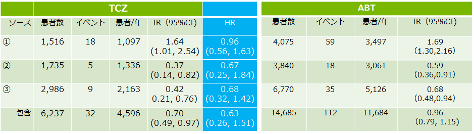

RA患者のTCZとABTの心血管イベントの比較マルチデータベース研究
●TCZとABT投与でのRA患者CVリスク（心筋梗塞と脳梗塞）を調査
- ⇒ABTと比較してACTのCVリスクが検討された研究（USでは、ABTが先に発売）
- －コホート研究として3つのデータを活用: ①メディケア（2010-13）、②IMS‘PharMetrics Plus（2011-2014）、③Truven 'MarketScan'（2011-6 / 2015）
- －プロペンシティスコアマッチング（PS）を用いて患者を抽出し比較
- －TCZ群:6,237例 vs ABT:14,685例
- －MTXは約70％の患者で使用
TCZを開始した患者でのABTとのCVイベントのHR

TCZもABTも同様に、CVリスクの上昇はなく副次評価も同様
C. Kim, et al. ACR2017. #527